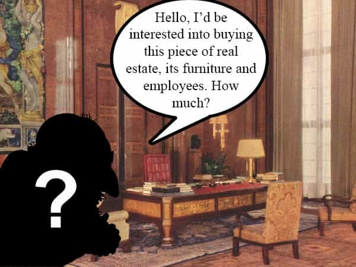
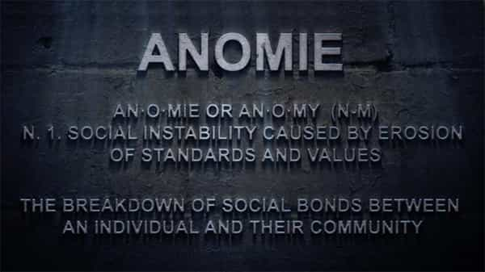

André is a young European who left his decaying country in 2012 for greener pastures. He enjoys exploring subterranean places, reading about a host of interconnected topics, and yearns for Tradition.


It is sometimes said that originality is overrated. Many of those who claim to be original are actually borrowing someone else’s ideas or, at best, developing what has been “in the air” for a while. Or, more often than not, “original” thinkers develop ideas from premises they are not fully aware of and seem strangely surprised when they reach a logical yet unsettling conclusion.
Joseph de Maistre, a contemporary critic of the French Revolution, claimed that we were blinded by a “gross sophism”: being only able to see effects or to reach causes with difficulty, we would judge by such standards men of antique times “who saw effects into their causes.” Indeed, when one reads the works of antique thinkers, whether politicians or philosophers, one cannot believe for long in the antique-times-is-man’s-childhood narrative, which seem to have appeared between the eighteenth and nineteenth century and is consistent with the progressive view but should be considered, to say it politely, highly doubtful.
Plato’s Republic, a ten-book block of dense text, stands out as one of the classic works that are so rich they never seem to lose their relevance. Reading some of it anew, I was surprised to find a resemblance of the mentality many how-to-get-rich books foster, of modern individualism and of what seems unbearably like Marxist class struggle. Did Plato “see the effects in their causes”? Whatever the answer, he delineated a process moderns did not learn from.

The bulk of the Republic deals with the “perfect constitution” or “perfect city.” As a pre-Hellenic Greek, Plato thought in terms of free cities rather than country, kingdom or empire, and his view of perfection remains local-scaled—which, as we will see, hardly changes a thing. The perfect city has a caste order that follows the priests-warriors-producers tripartition and is led by philosopher-kings, who are also able to contemplate eternal truths and master a wide range of knowledge including astrology.
After Plato went through the features of his ideal order, he asks through his mouthpiece Socrates how the city or political being may decay. “Clearly,” he says, “all political changes originate in divisions of the actual governing power; a government which is united, however small, cannot be moved.” (545d)
Corruption, and perhaps change in general, can only arise through discord between at least two factions. This will happen because of a mixture between the “races” of different castes—say, of the “golden race” of philosophers with the “bronze race” of merchants—that will create confusion, lack of sound judgment, and antagonisms. These will creep in and unfold progressively.
Aristocracy, the government of the best in the etymological sense, and the initially legitimate caste organization, degenerates in timocracy. The products of a mixture, timocrats are men who look for honours, recognition, and also wealth. They appreciate art and respect other free men, but are excessively harsh against slaves and inferior castes. Close from aristocrats, still virtuous and able to carry on many hardships, timocrats “lack purity” (549b). After they show great courage and military sense in their youth, they turn into wealth-hoarders with age. Dominated by their desires, creating envy and resentment because of their private hoarding, timocrats end up forgetting virtue and fostering enemies.
Timocracy, this close surrogate of aristocracy and equilibrated caste system, may triumph against all external foes thanks to the virile tendencies of its upper class. Still, it shows unable to deal with the internal enemy. An able man who takes the lead of a perilous expedition, even if he wins, may be hauled off to trial, berated by cowardly and envious sycophants who will take advantage of the least shortcoming to attack him (553a-b). The city starts punishing virtue and rewarding its soft underbelly. When sycophants win, the able and virtuous back away, not unlike the potential wealth creators under a State that punishes success.
Plato also mentions the role of women fanning the flames of rivalry. A virtuous man fulfills his own vocation, thus quietly benefiting the whole city, far from the noisy political show. This man has a wife and a son: the wife, always wanting for a “better” or higher-status mate—Plato knew about hypergamy—keeps complaining that her husband is not part of the governing group or of the top wealth bracket.
Further, when she sees her husband not very eager about money, and instead of battling and railing in the law courts or assembly, taking whatever happens to him quietly; and when she observes that his thoughts always centre in himself… she is annoyed, and says to her son that his father is only half a man and far too easy-going: adding all the other complaints about her own ill-treatment which women are so fond of rehearsing. Yes, said Adeimantus, they give us plenty of them, and their complaints are so like themselves. (549d-e)
Interestingly, the stimulation of rivalry by women is part of a wider trend. People admire those who succeed in a ruthless political competition, especially when they meddle with other people’s legitimate business, whereas those who mind with their own are looked down upon (550a). Growing under such circumstances, more stimulated by these rows than by contemplating the higher levels of being the original aristocracy knew, the youth become busy running after honours or money—and here come hypocrisy, treachery, Machiavellianism and a loss of identification between the individual and the city.
When timocrats see how badly treated they are when they show brave and collective-minded actions, they fall back on their private wealth hoarding.
The accumulation of gold in the treasury of private individuals is the ruin of timocracy; they invent illegal modes of expenditure; for what do they or their wives care about the law? And then one, seeing another grow rich, seeks to rival him, and thus the great mass of the citizens become lovers of money. (550d-e)
This looks very much like Frédéric Bastiat’s famous “everyone wants to live off the State and the State lives off everyone.” Classical liberals want to believe the problem comes from the State, but in truth, it is just a means; the deeper root comes from the will to live off others, whether through usury, exploitation, rent-seeking or public funding.
Plato’s remarks about oligarchs also seem to be echoed by works like Robert Kiyosaki’s Rich dad, poor dad. The latter advises individuals who want to get rich to be frugal, aware of short-term passions, bias and desires so that they don’t get dominated by them, and industrious—all this so that they can have at other people wasting their money, then buying real estate and living off someone else’s rent.
And so they grow richer and richer, and the more they think of making a fortune the less they think of virtue; for when riches and virtue are placed together in the scales of the balance, the one always rises as the other falls. (550e)
Your money works, as Kiyosaki says, because other people work it, other people pay for your capital, and if you want to get rich, you’d better spot the opportunities to grow a capital and make some pay for it.
This predatory policy makes some people richer and richer and the rest, poorer. “In an oligarchic city, almost everyone but the upper class is a beggar” (552e). The so-called middle class, today, is made of such beggars who depend from a big company and SJW-managed reputation for their income.
Furthering their interests, seasoned oligarchs are hypocrites who maintain an austere, focused, mostly self-mastered life but encourage others, especially the young, to spend foolishly and drown into debt. “They want to lend with a heavy interest so that [if the creditor defaults] they can seize their goods, be even richer and even more appreciated.” (555c) Ah, the sweet perfume of foreclosures!

By monopolizing many assets and turning the majority of their fellows into proles, the oligarchs create a major split. “Such a city won’t be one, but two: a city of poor and a city of rich, living in the same place and constantly conspiring against each other” (551d). The exploited youth, who awake to the grim reality of their own poverty, indebtedness, and lack of perspective, deeply resent the rich—especially those who feel they have a vocation but can’t realize it because all opportunities waned out.
The analogy between the two-city divide and the Marxist class struggle is too close to happen for chance, especially considering how classical liberalism and the industrial revolution happened first in modern times. We can see in passing that class opposition, far from being “the motor of history”, is the pathological product of an advanced stage in a degeneracy process.
Plato’s times weren’t ripe for hard-Left classism. Where a modern Marxist would have seen the “last stage of capitalism” before a classless society, Plato foresees the advent of democracy. The latter come when the oligarchs fail to repress or control a resentful majority: close wars, especially, are a good situation for exploited citizens, who notice how numerous and powerful they are against a few fat cats who sweat under the expensive armor.
Once they are able to unite, the exploited will take away the power, dispossess and banish the oligarchs, and establish an elective democracy. Here Plato refers implicitly to his own city, Athens, where many of the responsibilities were not voted but drawn by lot (557a).
Plato’s democracy looks strangely modern, not to say libertarian, whether in the right or the left sense. “In the democratic city, people can do whatever they want… everyone can arrange his own lifestyle at will.” (557b) To a superficial onlooker, this city is the most vibrant and the coolest: it looks like an “embroidered robe”, is full of individuals from various places, and works like a “bazaar” where political constitutions are on sale. People there do not need to assume any responsibility, can avoid draft, are free to pursue pleasure in their private setups, and so on. “Is this not a supremely delightful way of life, at least as long as it stands?” (558a)
Living an easy, luxurious life, the democratic people will lack any sense of discipline. Those who should not be equal—say, the immature students, the slaves, the women—will start fancying themselves so, behaving like responsible grownups, and jostle. Doesn’t that remind you the apparently puzzling evolution of 60s-70s “sexual emancipation” into the repressive, grievous, perpetually offended mindset of today SJWs?
At least timocracy and oligarchy were led by able, disciplined, competent men. Timocrats and oligarchs were clearly imperfect, yet they retained some greatness in them. Democrat men, in contrast, are mostly mediocre gratification-seekers and coward conformists. 60s-70s democracy becomes tyranny, the last form of government to spring up, thanks to the individuals’ self-chosen isolation and cowardice. Clearly, Plato would not be much surprised that the “tolerant” “free speech” apologists of the 60s led to a rigid Leftist dictatorship.
Nowadays, Plato’s Republic is taught every year in philosophy and political sciences classes. Even then, it looks like most students fail to glean any lessons from it, much less meditate it. Upper middle class female students likely prefer to “study” flattering material or dumb courses that mostly reflect contemporary entertainment “culture” than potentially ego-shattering truths.
What Plato describes here is a slippery slope. Each step leads to the following one because it fulfills specific conditions and creates a particular context where the latter can spring up. If Plato’s oligarchs were able to limit their own greed, perhaps the city would never degenerate into an anomic democracy (pleonasm?). If democrats didn’t spoil their youth by letting them turn into safe space-seeking crybullies, perhaps SJWness and tyranny would never appear.
Many lessons can be gleaned from the Republic. For now, I would say that the first one is we ought to struggle to become the aristocracy. Not merely in the superficial sense of a high status, but of building solid characters, virtues, abilities, and good habits. Money matters too, of course, but then we should look for it for personal independence and taking away the globalists’ power—not as a mean for idiotic pleasures that actually lead to dependence. Plato’s own example of the future oligarch’s self-mastery retains much relevance. As the author of another Republic titled book, Jean Bodin, would say, “true wealth lies in men.” The rest is secondary.